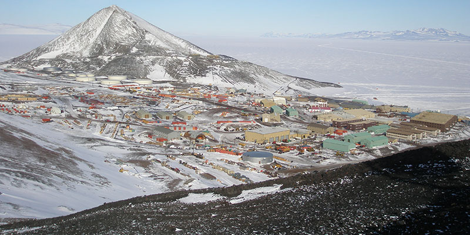
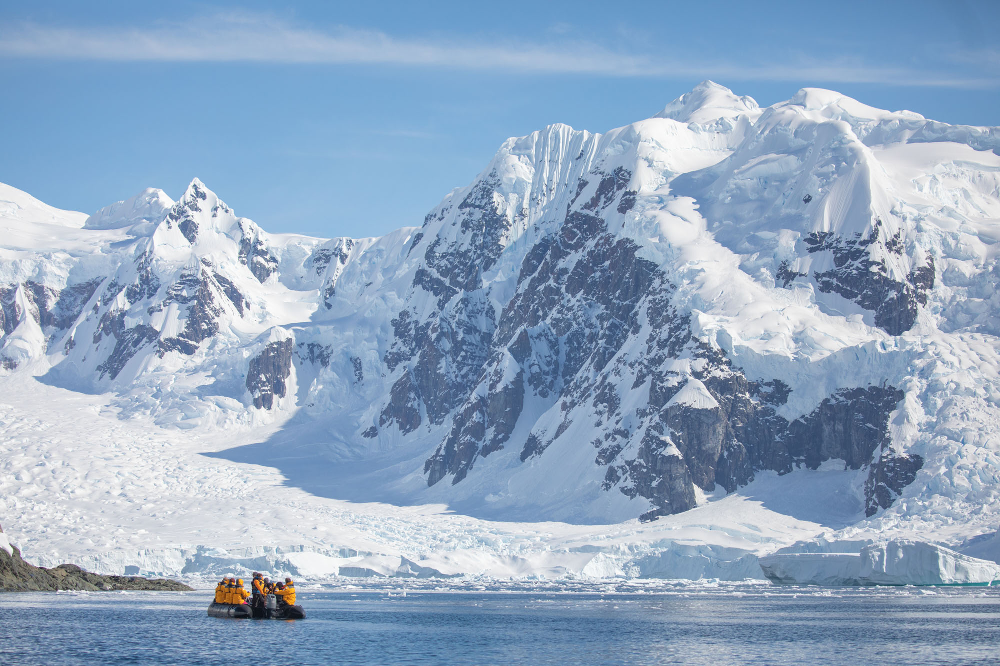

Antarctica


ABOUT ANTARCTICA
Antarctica is the coldest, windiest and driest continent.
It contains 90 percent of all of the ice on Earth in an area
just under 1.5 times the size of the United States. But the
southernmost continent is much more than a big block of ice.
Lying in the Antarctic Circle that rings the southern part of
the globe, Antarctica is the fifth largest continent. Its size
varies through the seasons, as expanding sea ice along the coast
nearly doubles the continent's size in the winter. Almost all
of Antarctica is covered with ice; less than half a percent of
the vast wilderness is ice-free.
GETTING TO ANTARCTICA
You can get to Antarctica by boat or plane. Sailing the
Drake Passage from the tip of South America to the Antarctic
Peninsula takes 48 hours. Flying to Antarctica takes 2 hours.
Approximately 54,000 visitors make the journey each year, with
around 50 expedition vessels sailing Antarctic waters each
season.